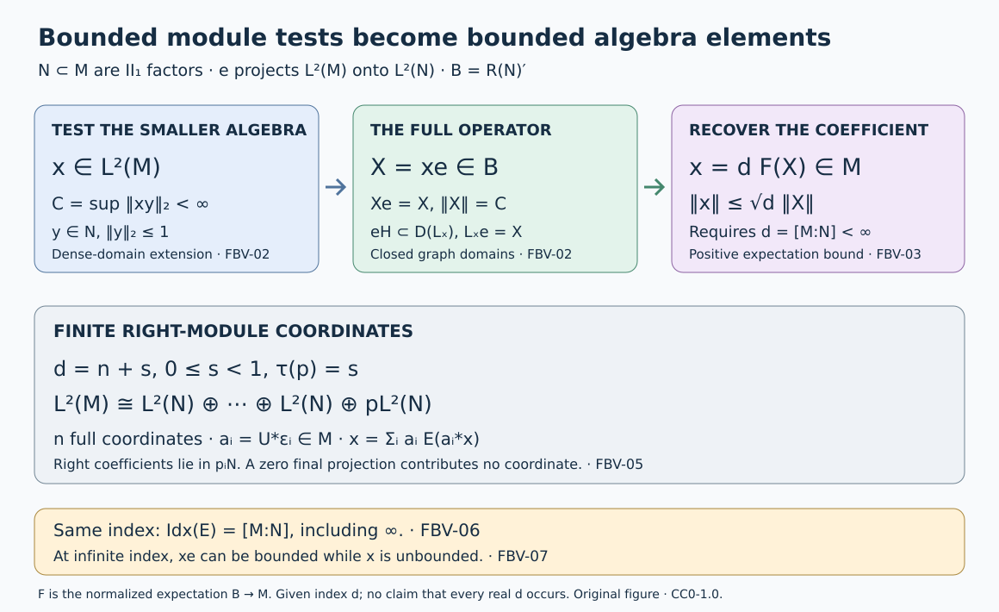

Finite-index bounded vectors and module bases
Boundedness of a vector depends on which algebra supplies the tests. For a finite-index inclusion of \(\mathrm{II}_1\) factors, testing only the smaller algebra is enough: a uniform estimate recovers the missing tests. We prove this with the Jones projection, identify the resulting finite projective module coordinates, and connect the tracial dimension index with the general expectation index.
The source comparison is Takesaki, Theory of Operator Algebras III, XIX.2, Exercises 1–3 and 5(a), printed pages 439–440. The finite-basis and basic-construction theorems used below have complete earlier programme proofs in OA-SUBFACTORS. We retain their ownership and hypotheses. The present lesson supplies the bounded-vector domains, norm comparison, coordinate reconstruction and connection with OA-MOD's general dual-weight construction. Principal graphs and the index-range classification are separate results.
Fix both traces and both actions
Let \(N\subseteq M\) be a unital inclusion of \(\mathrm{II}_1\) factors, with normalized trace \(\tau\) on \(M\) and its restriction on \(N\). Neither algebra is assumed separable. Let \(E:M\to N\) be the trace-preserving faithful normal conditional expectation. Use the actual measurable-operator realization
\[ H=L^2(M,\tau),\qquad \langle x,y\rangle=\tau(y^*x). \tag{FBV.1} \]Complete norms on actual measurable operators constructs its complete norm and bounded left and right module actions. The Hilbert space behind the trace identifies it with the tracial GNS Hilbert space. We write \(\widehat a\) for the vector of a bounded \(a\in M\), and \(\Omega=\widehat1\). Left multiplication identifies \(M\) with an algebra on \(H\), while \(R_b\widehat a=\widehat{ab}\) is the right action, so \(R_bR_c=R_{cb}\).
Let \(e\) project onto \(K=L^2(N,\tau)\subseteq H\), and put \(B=\langle M,e\rangle\). The complete basic-construction proof in A projection that remembers an inclusion, Theorems 1.2 and 1.4 and Corollary 1.5 gives
\[ \begin{gathered} e\widehat a=\widehat{E(a)},\qquad eae=E(a)e,\\ B=R(N)',\qquad eBe=Ne. \end{gathered} \tag{FBV.2} \]The projection \(e\) has central support one in the factor \(B\). There is a unique faithful normal semifinite trace \(\operatorname{Tr}\) on \(B\), normalized by
\[ \operatorname{Tr}(aeb)=\tau(ba)\quad(a,b\in M). \tag{FBV.3} \]In particular \(\operatorname{Tr}(e)=1\). Its value
\[ d=[M:N]=\operatorname{Tr}(1)\in[1,\infty] \tag{FBV.4} \]is the right \(N\)-module dimension of \(L^2(M)\): its endomorphism trace assigns dimension one to the standard submodule \(K=eH\). This trace calibration, including its uniqueness from a full corner, is part of the cited proof.
When \(d<\infty\), \(B\) is a \(\mathrm{II}_1\) factor. Its normalized trace is \(\tau_1=d^{-1}\operatorname{Tr}\), and \(\tau_1|_M=\tau\). Let \(F:B\to M\) be its trace-preserving faithful normal expectation. The full construction in Finite traces and Jones projections, M1–M6 gives its existence, normality, faithfulness and bimodularity. The trace normalization then gives
\[ F(aeb)=d^{-1}ab\quad(a,b\in M). \tag{FBV.5} \]For example, pairing the left side with any \(c\in M\) gives \(\tau(cF(aeb))=\tau_1(caeb)=d^{-1}\tau(cab)\); testing the difference against its adjoint proves (FBV.5). We never normalize an infinite trace at the identity.
A bounded-vector test gives an operator on the full Hilbert space
For \(x\in L^2(M)\), define the extended number
\[ C_N^r(x)= \sup_{\substack{y\in N\\ \|y\|_2\leq1}}\|xy\|_2. \tag{FBV.6} \]Each product \(xy\) belongs to \(L^2(M)\) by TI-09. Suppose \(C=C_N^r(x)<\infty\). The map
\[ T_x:K\longrightarrow H,\qquad T_x\widehat y=xy \quad(y\in N) \tag{FBV.7} \]extends uniquely to a bounded operator of norm \(C\), since the vectors \(\widehat y\) are dense in \(K\). Set \(X=T_xe\in B(H)\). Because \(eH=K\), restriction to \(K\) proves
\[ Xe=X,\qquad \|X\|=C,\qquad X\Omega=x. \tag{FBV.8} \]For \(b,y\in N\), associativity gives \(T_xR_b\widehat y=xyb=R_bT_x\widehat y\). Both maps are bounded, so this equality extends to \(K\). Also \(eR_b=R_be\), because \(K\) reduces the right \(N\)-action. Therefore \(XR_b=R_bX\) on \(H\), and (FBV.2) gives \(X\in B\).
This operator is literally the full-domain product \(L_xe\), not merely an unspecified extension of a formal symbol. To check domains, write the measurable polar decomposition \(x=u|x|\). Transport the spectral projections of \(|x|\) through the faithful normal left representation in TI-15, and define the closed left multiplication operator \(L_x=L_uL_{|x|}\) by spectral calculus. Its domain consists of the vectors with finite \(|x|^2\)-spectral integral. Closedness follows because \(L_u\) is isometric on the support of \(L_{|x|}\). Spectral truncation and TI-09 identify \(L_x\widehat y=xy\) for every \(y\in M\): the required energy is
\[ \tau(y^*|x|^2y)\leq\|y\|^2\tau(|x|^2)<\infty. \tag{FBV.9} \]The equality and bound follow first for bounded spectral cuts, by the trace property, and then by monotone convergence.
Given \(\eta\in K\), choose \(\widehat y_j\to\eta\) with \(y_j\in N\). Equation (FBV.7) gives \(L_x\widehat y_j\to T_x\eta\). Closedness implies \(\eta\in D(L_x)\) and \(L_x\eta=T_x\eta\). Thus \(K\subseteq D(L_x)\), and \(L_xe\) is defined on all of \(H\), where it equals \(X\). We may consequently write
\[ xe=X\in B,\qquad\|xe\|=C_N^r(x). \tag{FBV.10} \]This argument did not use finite index.
Finite index turns the vector into a bounded element
Assume now \(d<\infty\). The normal map
\[ \mathcal P:B\longrightarrow M,\qquad \mathcal P(Z)=dF(Ze) \tag{FBV.11} \]recovers the coefficient of \(Ze\). Here is the full calculation, as in Finite bases, bounded vectors and a positive-operator inequality, Lemma 3.1.
For \(Z=aeb\), (FBV.2) and (FBV.5) give \(\mathcal P(Z)=aE(b)\), hence \(\mathcal P(Z)e=Ze\). The linear span \(MeM\) is ultraweakly dense in \(B\): it is a star algebra whose ultraweak closure is the ideal generated by the full projection \(e\), as proved in the basic-construction reading. Both sides of the identity are ultraweakly continuous in \(Z\). Thus
\[ \mathcal P(Z)e=Ze\quad(Z\in B). \tag{FBV.12} \]Applying \(F\) to \(ZeZ^*=\mathcal P(Z)e\mathcal P(Z)^*\) yields
\[ d^{-1}\mathcal P(Z)\mathcal P(Z)^* =F(ZeZ^*)\leq\|Z\|^2\,1. \tag{FBV.13} \]Consequently \(\|\mathcal P(Z)\|\leq\sqrt d\,\|Z\|\). The recovered coefficient is unique: if \(ae=be\) for \(a,b\in M\), evaluation at \(\Omega\) gives \(\widehat a=\widehat b\), and faithfulness of the trace gives \(a=b\).
Apply this to \(X=xe\) from FBV-02. Equations (FBV.8) and (FBV.12), evaluated at \(\Omega\), give \(x=\widehat{\mathcal P(X)}\) as an \(L^2\) vector. The concrete measurable-operator identification in TI-09 and TI-15 is injective. Therefore \(x\) is precisely that bounded element of \(M\), and
\[ \begin{gathered} F(xe)=d^{-1}x,\\ \|x\|\leq\sqrt d\,\|xe\| =\sqrt d\,C_N^r(x). \end{gathered} \tag{FBV.14} \]Conversely, if \(x\in M\), then \(\|xy\|_2\leq\|x\|\|y\|_2\), so \(C_N^r(x)\leq\|x\|\). We obtain the equivalence and norm comparison
\[ C_N^r(x)<\infty\ \Longleftrightarrow\ x\in M, \qquad C_N^r(x)\leq\|x\|\leq\sqrt d\,C_N^r(x). \tag{FBV.15} \]In particular, (FBV.14) establishes the expectation identity with a bounded right side; no unbounded element has been inserted into the domain of the bounded expectation \(F\).
Compare bounded-vector norms in any normal representation
Let \(M\) act normally and unitally on any Hilbert space \(\mathcal H\), and let \(\xi\in\mathcal H\). For \(A=N,M\), put
\[ C_A^\ell(\xi)= \sup_{\substack{a\in A\\a\ne0}} \frac{\|a\xi\|}{\tau(a^*a)^{1/2}}\in[0,\infty]. \tag{FBV.16} \]The restriction to \(N\) shows \(C_N^\ell(\xi)\leq C_M^\ell(\xi)\).
Use the complete finite-basis construction Theorem 3.2 and Corollary 3.4 of the finite-bases reading. It gives finitely many \(u_i\in M\) and projections \(p_i\in N\), with
\[ \begin{gathered} u_i=u_ip_i,\qquad E(u_i^*u_j)=\delta_{ij}p_i,\\ \sum_i u_i u_i^*=d1,\qquad a=\sum_i u_i c_i,\quad c_i=E(u_i^*a)\in p_iN. \end{gathered} \tag{FBV.17} \]For these coefficients,
\[ \sum_i\tau(c_i^*c_i)=\tau(a^*a). \tag{FBV.18} \]Indeed, expand \(a^*a\), apply \(E\), use its bimodularity and the middle orthogonality in (FBV.17), then take \(\tau\).
Suppose \(C_N^\ell(\xi)=C<\infty\). In the given representation the row operator \(\mathcal U=(u_i)_i:\bigoplus_i\mathcal H\to\mathcal H\) has \(\mathcal U\mathcal U^*=d1\), so \(\|\mathcal U\|=\sqrt d\) unless \(\mathcal H=0\), where the estimate is immediate. Hence
\[ \begin{split} \|a\xi\|^2 &=\left\|\sum_i u_i c_i\xi\right\|^2\\ &\leq d\sum_i\|c_i\xi\|^2\\ &\leq dC^2\sum_i\tau(c_i^*c_i) =dC^2\tau(a^*a). \end{split} \tag{FBV.19} \]Taking the supremum gives
\[ C_N^\ell(\xi)\leq C_M^\ell(\xi) \leq\sqrt d\,C_N^\ell(\xi). \tag{FBV.20} \]If the last quantity is infinite the inequality has its extended-value meaning. Thus \(N\)-bounded and \(M\)-bounded vectors coincide. No finiteness hypothesis on the representation's commutant was used; the source's finite-representation assertion is included.
The right-module version follows by applying the same calculation to \(N^{\mathrm{op}}\subseteq M^{\mathrm{op}}\). A right \(M\)-action is a left representation of \(M^{\mathrm{op}}\) on the same Hilbert space: \(a^{\mathrm{op}}\xi=\xi a\). Its opposite trace satisfies \(\tau_{\mathrm{op}}((a^{\mathrm{op}})^*a^{\mathrm{op}})=\tau(aa^*)=\tau(a^*a)\), so the testing norms and constant are unchanged. Coefficients move sides together with the opposite action.
Recover every basis from its Hilbert-module coordinates
Write \(d=n+s\), where \(n=\lfloor d\rfloor\) and \(0\leq s<1\). The dyadic projection construction in the finite-bases reading supplies \(p\in N\) with \(\tau(p)=s\). Put \(p_i=1\) for \(1\leq i\leq n\) and \(p_{n+1}=p\). Its Theorem 3.2 and Corollary 3.4, proved by projection comparison and (FBV.11), give a right \(N\)-module unitary
\[ U:H\longrightarrow\mathcal K= \bigoplus_{i=1}^{n+1}p_iL^2(N). \tag{FBV.21} \]Here \(p_iL^2(N)\) is a right module because left multiplication by \(p_i\) commutes with every right multiplication. Its bounded coordinate space is \(p_iN\), not \(Np_i\).
Let \(U\) be any unitary intertwining these right actions, and let \(\varepsilon_i\) be the coordinate vector with entry \(p_i\) in position \(i\). Define \(a_i=U^*\varepsilon_i\in L^2(M)\). For \(y\in N\),
\[ \|a_i y\|_2=\|\varepsilon_i y\|_2 =\|p_i y\|_2\leq\|y\|_2. \tag{FBV.22} \]Thus FBV-03 gives \(a_i\in M\) and \(\|a_i\|\leq\sqrt d\). Also \(a_i p_i=a_i\), by the right intertwining property and \(\varepsilon_i p_i=\varepsilon_i\).
The same intertwining property determines the \(N\)-valued inner products, rather than just their scalar traces. For \(y,z\in N\),
\[ \begin{split} \tau(z^*a_j^*a_i y) &=\langle a_i y,a_jz\rangle\\ &=\langle\varepsilon_i y,\varepsilon_jz\rangle\\ &=\delta_{ij}\tau(z^*p_i y). \end{split} \tag{FBV.23} \]Trace preservation and bimodularity identify the first line with \(\tau(z^*E(a_j^*a_i)y)\). Set \(y=1\), then choose \(z\) equal to the difference of the two \(N\)-coefficients. Faithfulness proves
\[ E(a_j^*a_i)=\delta_{ij}p_i. \tag{FBV.24} \]Define \(V_i:L^2(N)\to H\) by \(V_i\widehat y=a_i y\). From \(U V_i\widehat y=\varepsilon_i y\), it is \(U^*\) followed by the \(i\)-th coordinate inclusion and the projection \(p_i\). Therefore its range projections are orthogonal and sum to one:
\[ \sum_i V_iV_i^*=1_H. \tag{FBV.25} \]If \(j:K\hookrightarrow H\) is inclusion, then \(V_i=L_{a_i}j\), since this is true on the dense bounded vectors and both operators are bounded. As \(jj^*=e\), (FBV.25) becomes
\[ \sum_i a_i e a_i^*=1. \tag{FBV.26} \]For \(x\in M\), multiply by \(xe\) and use Jones compression. Injectivity of \(a\mapsto ae\) gives
\[ x=\sum_i a_i E(a_i^*x). \tag{FBV.27} \]The coefficients are in \(p_iN\). Applying \(E(a_j^*\,\cdot\,)\) proves uniqueness among expansions with coefficients in these supported spaces. Applying \(F\) to (FBV.26) gives \(\sum_i a_i a_i^*=d1\). Thus every module unitary in (FBV.21) yields the full partial orthonormal basis, not just a Hilbert-space orthonormal family.
Conversely, (FBV.24) and (FBV.27) make the coefficient map
\[ \widehat x\longmapsto \bigl(\widehat{E(a_i^*x)}\bigr)_i \tag{FBV.28} \]an isometry on bounded \(x\), by (FBV.18). Its inverse on bounded supported tuples is \((c_i)\mapsto\sum_i a_i c_i\), using (FBV.24). Both domains are dense, so the maps extend to inverse module unitaries. These coordinates also identify \(M_N\) with the finite projective right module \(\bigoplus_i p_iN\). If \(s=0\), \(p=0\), \(\varepsilon_{n+1}=a_{n+1}=0\); the zero coordinate may be omitted.
The general expectation index equals the tracial dimension index
For a faithful normal expectation, The value at the identity is scalar, including infinity proves that its commutant dual satisfies \(E'(1)=\kappa1\), with \(\kappa\in(0,\infty]\). A two-representation comparison proves independence of the scalar proves independence of the faithful normal representation. We now identify this number with (FBV.4), allowing infinite index.
Represent the trace-preserving \(E:M\to N\) on \(H=L^2(M)\), and denote by \(\tau'\) the normalized trace on the right copy \(M'=R(M)\). Put
\[ \eta=\tau'\circ E'\quad\text{on }N'_+. \tag{FBV.29} \]The proof of The dual weight and the Jones projection, Theorem 21.4 establishes the required spatial normalization: because \(\tau E=\tau\) and the trace modular operator is \(1\), spatial duality and reciprocity give \(d\eta/d\tau|_N=1\). The spatial modular-action and KMS theorems then make \(\eta\) a faithful normal semifinite trace. Its proof uses the full n.s.f. composition theorem, so no finiteness of \(\eta(1)\) is presumed.
We spell out the calibration that determines its mass. In this representation \(e\in N'\) and the exact dual-projection calculation gives \(E'(e)=1\). For \(b\in N\), its right multiplication belongs to \(M'\) and commutes with \(e\). Bimodularity therefore yields
\[ \begin{split} \eta(eR_b^*R_b e) &=\tau'\bigl(R_b^*E'(e)R_b\bigr)\\ &=\tau'(R_b^*R_b)=\tau(b^*b). \end{split} \tag{FBV.30} \]The last equality uses the opposite trace; \(\tau(bb^*)=\tau(b^*b)\) removes the reversed product. Thus \(\eta\) restricts on \(eN'e\) to the normalized trace of the standard right \(N\)-action.
Let \(Jx=x^*\) on \(L^2(M)\), as constructed in TI-15. Then \(JeJ=e\), \(JN'J=B\), and conjugation transports \(\eta\) to a faithful normal semifinite trace on \(B\). Its restriction to \(eBe\) is the normalized left trace, by (FBV.30). The full-corner uniqueness proof in Lemma 1.2a of the basic-construction reading identifies this transported trace with \(\operatorname{Tr}\). Hence
\[ \kappa=\tau'(E'(1))=\eta(1) =\operatorname{Tr}(1)=d. \tag{FBV.31} \]All equalities are extended-positive equalities. If \(d=\infty\), both indices are infinite; we have divided by neither one. EI-09 transports the result to every faithful normal representation:
\[ \operatorname{Idx}(E)=[M:N]. \tag{FBV.32} \]This is the tracial specialization of the general B9 expectation-index machinery. The earlier finite-index norm estimates and (FBV.5) therefore use the same scalar as the normalized dual expectation.
Models, the infinite-index boundary, and the diagram

The first arrow is the extension from the dense subspace \(\widehat N\), including the closed-operator domain argument in FBV-02. The second uses the finite scalar \(d\) and the normal map \(dF(\,\cdot\,e)\) in FBV-03. The lower row records actual right \(N\)-module coordinates and their supported coefficient spaces from FBV-05. The same \(d\) is the dual-weight index by FBV-06. The diagram does not assert that every real \(d\geq1\) occurs as a subfactor index.
A matrix amplification. Let \(Q\) be a \(\mathrm{II}_1\) factor, and set \(N=Q\otimes1\subset M=Q\bar\otimes M_k(\mathbb C)\), with trace \(\tau_Q\otimes\operatorname{tr}_k\). The matrix-coefficient calculation of the basic-construction reading gives \(B\cong Q\bar\otimes B(L^2(M_k,\operatorname{tr}_k))\). Its corner-normalized trace is \(\tau_Q\otimes\operatorname{Tr}_{k^2}\), so \(d=k^2\). For
\[ a_{ij}=\sqrt k\,(1\otimes E_{ij}), \quad 1\leq i,j\leq k, \tag{FBV.33} \]direct multiplication gives
\[ E(a_{ij}^*a_{\ell m}) =\delta_{i\ell}\delta_{jm}1,\qquad \sum_{i,j}a_{ij}a_{ij}^*=k^2\,1. \tag{FBV.34} \]They form \(k^2\) free right coordinates. The index is \(k^2\), even though the matrix algebra acts on a \(k\)-dimensional vector space.
Why finite index cannot be dropped. Let \(P\) be any \(\mathrm{II}_1\) factor and take \(N=P\otimes1\subset M=P\bar\otimes P\). The faithful normal product trace and the Hilbert-space product realization are supplied by Tensor Hilbert algebras and Tomita domains. The product is a factor: if \(z\) is central, every slice \((\mathrm{id}\otimes g)(z)\) commutes with the first \(P\) and is scalar. Subtract \(1\otimes(\tau\otimes\mathrm{id})(z)\); all product normal functionals vanish on this difference, hence it is zero. Product normal functionals separate points because vector functionals on a spatial tensor representation are approximated by those with finite sums of elementary tensor vectors, using the summable-vector representation in Every tensor vector is a summable vector series through The concrete predual and its intrinsic norm. Commutation with the second \(P\) now forces the remaining slice to be scalar. Since \(M\) is finite, is a factor and contains an infinite-dimensional finite factor unitally, it has type \(\mathrm{II}_1\).
Choose orthogonal projections \(q_j\) in the second \(P\) with \(\tau(q_j)=2^{-3j}\), \(j\geq1\), by the dyadic projection construction used in FBV-05. They use total trace \(1/7\); the remaining projection has trace \(6/7\).
The positive closed affiliated operator \(h=\sum_{j\geq1}2^j q_j\), zero on the remainder, has
\[ \tau(h^2)=\sum_{j\geq1}2^{2j}2^{-3j} =\sum_{j\geq1}2^{-j}=1. \tag{FBV.35} \]Its spectral domain is the set of vectors \(\zeta\) with \(\sum_j2^{2j}\|q_j\zeta\|^2<\infty\); finite truncations prove density. Thus \(h\in L^2(P)\), but \(h\) is unbounded since every \(q_j\ne0\). The vector \(x=1\otimes h\in L^2(M)\) satisfies
\[ \|xy\|_2=\|y\|_2\quad(y\in N). \tag{FBV.36} \]It is \(N\)-bounded with constant one and is not a bounded element of \(M\). The trace and spectral equalities follow from bounded truncations and monotone convergence, retaining the stated closed operator.
In this inclusion \(L^2(M)=L^2(P)\otimes L^2(P)\) as a right \(N\)-module. Choose arbitrarily large finite orthonormal families in the second Hilbert space; each gives that many orthogonal standard right \(P\)-submodules. Their projections are equivalent in the right-action commutant to \(e=1\otimes|\widehat1\rangle\langle\widehat1|\), by the corresponding rank-one partial isometries on the second coordinate. Thus the dimension trace assigns each mass \(\operatorname{Tr}(e)=1\), and its identity has infinite trace. Therefore \(d=\infty\), in agreement with (FBV.15) and (FBV.32). The failure occurs at the coefficient-recovery step requiring finite \(d\); FBV-02's bounded operator \(xe\) still exists.
Solved checks and exact scope
1. The identity inclusion. If \(N=M\), then \(e=1\), \(d=1\), and \(F=\mathrm{id}\). Equation (FBV.15) reads \(C_M^r(x)=\|x\|\) for bounded \(x\). A single basis vector may be any unitary \(u\in M\); its coordinate is \(u^*x\), so \(u(u^*x)=x\).
2. Why coefficient order matters. In \(M=M_2(\mathbb C)\bar\otimes R=N\), take \(u=(E_{12}+E_{21})\otimes1\) and \(x=E_{11}\otimes1\). The right coefficient is \(c=u^*x\). Then \(uc=x\), whereas \(cu=u^*xu=E_{22}\otimes1\). Thus the right module expansion cannot be changed to \(\sum_i c_i a_i\).
3. The final support. If \(s=0\), \(p=0\), so (FBV.22) forces \(a_{n+1}=0\). For \(s>0\), (FBV.24) gives \(\|a_{n+1}\|_2^2=\tau(p)=s\). The final coordinate is \(pN\) with that support, and is not an extra free copy of \(N\).
4. Recover the normalized expectation. In (FBV.14) the scalar is \(d^{-1}\), while the norm factor is \(d^{1/2}\). The first comes from \(F(e)=d^{-1}1\). For the second, apply \(F\) to the positive operator \(xe x^*\), obtaining \(d^{-1}xx^*\), and then take the square root of its operator-norm bound. Replacing \(d^{1/2}\) by \(d^{-1/2}\) reverses that calculation.
5. Right and left tests. For \(x\in L^2(M)\), the adjoint is an isometry by TI-09. Thus \(\|yx\|_2=\|x^*y^*\|_2\). Applying (FBV.15) to \(x^*\) proves the left-multiplication version, with the same constants, without commuting \(x\) past \(y\).
6. Index one in every representation. Formula (FBV.32) and faithfulness of \(\operatorname{Tr}\) show that \(\operatorname{Idx}(E)=1\) forces \(\operatorname{Tr}(1-e)=0\), hence \(e=1\) and \(E=\mathrm{id}\). Conversely the identity expectation has index one. Representation independence in EI-09 makes this conclusion intrinsic to the inclusion.
The argument proves every clause of Exercises XIX.2(1)–(3), and Exercise XIX.2(5a) including infinite index. The basis existence is furnished by its exact earlier OA-SUBFACTORS proof; FBV-05 proves the requested boundedness and basis reconstruction for any intertwining unitary. The finite-representation hypothesis in Exercise 2 is unnecessary for (FBV.20). All domains and the distinction between \(N'\) and \(B=R(N)'\) in the dual-weight calculation are retained. This exposition and its editable SVG are CC0-1.0 to the extent of rights held.